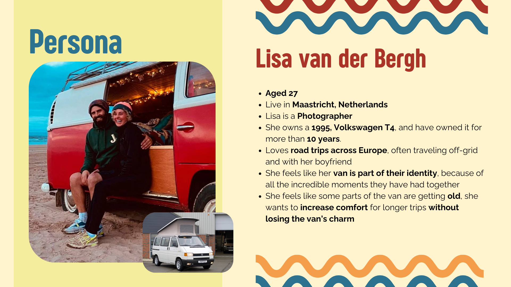

Corporate information
General Information
This branded website is publicly available at buas-media-interactive.github.io/my-website (please change text and hyperlink destination)
This website was created by…
- Benedek Soós (ID: 232881)
- Sandor Marton (ID: 230991)
- Ivo Duarte (ID: 234371)
Content
Please clarify here the match between students and pieces of content. Make sure that you provide a link to the correct page within the website
| # | Student ID | Value | Name and link of content |
|---|---|---|---|
| 1. | 234371 | Rebellion | Value-Rebellion |
| 2. | 234371 | Nostalgia | Value-Nostalgia |
| 3. | 232881 | Expression | Value-Expression |
| 4. | 230991 | Autonomy | Value-Autonomy |
Vision Statement
In a world that’s constantly moving faster, we believe that the things we hold close should never be forgotten, they should grow with us, because only then can we create meaningful stories that define us and experiences that make us unique.
Persona
Disclaimer
ONLYVANS is an independent brand focused on van culture lifestyle, with no connection to “OnlyFans”. Our name is a playful, transformative parody, legally protected under trademark law in the Netherlands and the EU. There is no risk of consumer confusion, as we offer completely different products and services. We are confident in our right to use the ONLYVANS name, aligning with intellectual property laws while keeping van life fun and creative.
Production
Design Elements
Color Palette
Our color palette captures the feeling of adventure, nostalgia, and authenticity our brand also carries. WIth a retro approach that connects to out target audience, it mixes warm, energetic tones with cool, calming colors, creating a balanced and inviting vbe. It feels both nostalgic and fresh, just like the freedom of van life full of creativity, fun, and a little bit of rebellion.
-
-
#FEEEC2
We chose this color for the background because it reflects the warmth, nostalgia, and approachable spirit of ONLYVANS. It’s a soft, retro-inspired tone that creates a welcoming feel while supporting our brand’s personality.
-
#3B8EA5
This blue adds balance to the palette. It feels clean and calm like fresh air or open roads. It brings a sense of clarity and trust, while still fitting into the retro, rebel vibe of the brand.
-
#F5EE9E
A soft, retro-inspired yellow that feels warm and familiar. It adds the nostalgic tone to the brand, referencing old photos, sunlight through the van's windows, and the golden moments that define life on the road. It creates a friendly, inviting atmosphere without being overwhelming.
-
#F49E4C
The orange adds personality while still fitting the retro vibe. It captures the creative and rebellious attitude of ONLYVANS. It draws attention without feeling like an impostor, perfect for a brand that wants to stand out while still being approachable and fun.
-
#AB3428
The red introduces a sense of passion, character, and authenticity. Speaking to the craftsmanship, the DIY spirit, and the emotional connection that our target group have with their vans. It ties the entire palette together with warmth and depth.
-
#FEEEC2
Font Choices
Bebas NeueThis font is bold and strong making it perfect for titles. It captures attention right away with its timeless, all-caps design which fits the adventurous and retro spirit of ONLYVANS
Advent ProChosen for its clarity and readability. Advent Pro gives a more approachable look to the body text and subtitles. It is not a very simple font and with it's personality, ensures that the content is easy to read while still maintaining a strong connection to the brand’s values and willingness to stand-out.
User interface patterns
Our website uses several user interface (UI) patterns to create an intuitive and engaging experience for visitors. At the top, the navigation bar allows users to quickly find and access important sections of the site. The hero section always includes a brief introduction and, on some secondary pages (e. g. Upgrade Packages ) a relevant image to grab attention and set the tone for the content, also showing separation from the main pages. The carousel on the Vanspiration page displays multiple pieces of content in a visually appealing and interactive way, making it easy for users to browse ideas or inspirations. Cards are used to display Team Members and Offerings, offering an organized way to present information that is easy to scan and interact with to navigate smoother and more independently. These patterns such as the navigation bar, hero section, carousel, and cards, help users navigate the site smoothly, find what they need quickly, and engage with the content in a visually clear and attractive way.
The structure of the navigation and content
The structure of our website is designed to be simple, intuitive, and engaging for our audience. It starts with a navigation bar at the top of every page for easy access to key sections. The homepage features a engaging brief introduction about our brand and a button to explore further. This takes users to the Our Road Story page, where we display our brand's values and mission in form of storytelling.
On the navigation bar, users can than access the Pim Your Van page, the section that showcases users our brand's different offerings in cards for simple navigation. By clicking in one of those cards users are redirected for pages with more information about our offerings (e.g.Upgrade Packages). All this pages end with a Contact section where visitors can send us a message about their vans.
In the Vanspiration page users can easily see more of what we do as a brand and get inspired for possible updates on their own vans.The last page is the FAQ YEAH page where we display Frequently Asked Questions to help users and possibly save time in sending us a message. This page also ends with a contact form for questions that are not answered in the page.
How does website design fit the values and personality of the brand
The website design captures the brand’s personality by mixing a retro, nostalgic vibe with modern elements to create a unique and engaging experience that reflects our values. This retro style connects with the target audience's love for their past memories while celebrating the freedom and individuality that comes with camper van culture. The design is visually dynamic, using vibrant and vintage colors together with images and illustration to evoke a sense of warmth and familiarity, while still feeling. All pages are designed to invite users to explore and feel a personal connection with the brand, reflecting both the freedom of the van life and a love for personal expression.
How does website design fit the marketing and communication strategy
The website design matches our marketing and social media strategy. The colors, fonts, and images we use are the same across both the website and our social media posts. This makes it easier for people to go from our social media to our website and feel like they’re still experiencing the same brand. Keeping everything consistent is important for building recognition. Our social media is made to grab the attention of our target audience, so when they visit the website, the same vibe and message should be there to keep them engaged and remind them why they came. Our social media strategy is also focused less on giving detailed information about the brand and its offerings. So, we believe that people who come from there are looking for more details. That’s why we focus on providing the most important pages of the website, like the home page and Our Road Story page, which is where the Homepage button takes you. Our goal is to make sure the information they want is easy to find and keeps them engaged.
How does website design help showcase the unique value proposal of the product
The website design effectively showcases our unique value proposition through the chosen images, colors, and the intuitive layout. The visuals reflect our core values with a retro-inspired vibe that gives a sense of adventure and freedom. The use of contrasting colors adds energy and excitement, and also makes our key messages stand out. The easy navigation gives users a sense of control, allowing them to explore the site at their own pace. Additionally, the Vanspiration page encourages visitors to envision the possibilities for their own vans, further aligning with the idea of transformation and personalization.
Credits
Please provide links and/or credits for third-party elements including:
- HTML templates if these are different from this one (buas-media-interactive/prj4-group-template)
- The source code for UX patterns other than the ones provided by the “Bootstrap” library (see getbootstrap.com/docs for a list of such patterns)
Images
All images and illustrations were licensed by: Adobe Stock
Testing Report
Testing Goals
Our testing goals were to check if the website was easy to use, if users could quickly understand what we offer, and if the overall design and layout helped guide them through the pages smoothly. We wanted to make sure the site's style matched our brand and our values.
Testing Methods
When it came time for testing, we couldn’t find participants that fully matched our target group, so we reached out to people close to us who had no prior knowledge of the brand or product. Two of the participants were women aged 20 and 19 (Beatriz and Sofia), and one other man, Jenö. The testing took place outside of campus. Although they weren’t part of our exact target audience, they still gave us valuable feedback on the website. All participants tested the site on both desktop and mobile devices.
Testing Protocol
For the testing, we gave the participants a brief overview of what our brand is about, explaining the main topics, and then allowed them to navigate the website on their own. One team member took notes during the process. Caa be found here: Notes
Testing Findings (Positive Aspects Ranked in Importance)
| # | Issue | Description |
|---|---|---|
| 1. | Navigation | Easy and intuitve, most users took the path we expected and navigated well in the website |
| 2. | Carousel | Most participants found it interesting, and a good for of showing the content |
Testing Findings (Negative Aspects Ranked in Importance)
| # | Issue | Description |
|---|---|---|
| 1. | Call-To-Action | After navigating on the webiste most participants were confused on how to make a purchase proceed after seeing the informations |
| 2. | FAQ page | All the participants found a lot of problmes with the FAQ page including scrolling, and bugs in the animations |
| 3. | Images on Mobile | All the participants noticed that the format of the images were wrong when visiting the website on the mobile |
| 4. | Corporate page | Participants were confused about the existance of the corporate page |
Improvements
| # | Issue | Chnages | Status |
|---|---|---|---|
| 1. | Call-To-Action | Adding a clear call to action at the end of the page indicating that to proceed it is possible to contact us | Done |
| 2. | FAQ page | Fixed Mistakes in the FAQ page animations | Done |
| 3. | Images on Mobile | Fixing the images to be more responsive in the mobile versions | Done but needs improvement |
| 4. | Corporate page | Hiding the page or giving the acces only trough login so that users aren't bothered with it | Future Improvements |
Marketing
Context of campaign and promotional activities
Our brand focuses on van upgrades for people who love their vans but need small improvements to keep them running and preserve the memories they’ve made. According to World Today News (2023), van ownership among young people has increased by 53% between 2020 and 2023. Ibrahim (2024) also highlights the rise of the "van life" trend, showing that more young adults are buying vans,often older ones, because they’re more affordable. We believe this shift in the market has created a new target group that’s currently underserved.
Our audience is mainly people aged 25 to 35. Some have owned their vans for years and want to hold onto the memories, while others are new owners who want to personalize their vans to reflect their identity. Our marketing message is centered around this connection: your van is more than just an object, it’s part of who you are. If you’re adventurous, expressive, or rebellious, your van should be too. By upgrading your van, you’re not just fixing it, you’re giving it a second life with even more meaningful stories.
As a small and new brand, it’s important for us to stand out. That’s why our communication style is creative, playful, and sometimes even risky. We want to grab attention and make people feel something. By using humor and a unique tone of voice, we create content that connects with our audience and makes us memorable in a market full of similar-looking brands.
Channels
Using TikTok and Instagram is essential for reaching our target audience of 25–35-year-olds. Both platforms have a strong presence among this age group (Billo, 2025). TikTok's algorithm favors discovery, allowing our content to reach new users organically, while Instagram's features enable us to build a consistent brand presence. By leveraging both platforms, we can effectively engage our audience and promote our brand's message.
Communication and Media Plan
Objectives (By the 18 of April of 2025)
Reach Objectives: Reach 200 people in 4 weeks on Instagram/Reach 400 people in 4 weeks on TikTok
Response Objectives: Reach 70 followers on Instagram /Have at least 3 posts with 10 likes on Instagram/Have at least one post with 30 likes
Affect Objectives: Give the target group a sense of nostalgia and empower them to make more trips and enjoy the van life
Learning Points
Week 1(24/03 - 30/03)
Our Actions
For our first campaign week, our goal was to introduce the brand to a new audience. We did this by showcasing our logo and visual style. Since our brand name sounds similar to a well-known company, we used that as an advantage by adding a touch of satirical humor to our post. Based on insights from our interviews and research by Social Pilot (2025), we chose to post at 2 PM, an ideal time for reaching our audience. Even though according to Kontentino (2024) brands should post between 2 and 4 posts (a strategy we will implement later), for this week, we focused on one strong post, shared across both Instagram and TikTok.
| # | tikTok | |
|---|---|---|
| Total views of the new posts | 149 | 718 |
| Total engagement of the new posts (likes, comments, shares, saves | 16 | 2 |
| Total accounts reached | 75 | 648 |
What We Learned
We were positively surprised by the results of our first campaign week. TikTok especially stood out, none of us had experience using it for marketing, yet the post reached a large audience. One key insight we gained was the clear difference between TikTok and Instagram. While TikTok made it easier to get views, engagement levels were noticeably lower than on Instagram. We also realized that our initial objectives were more achievable than expected. Already reaching them on TikTok after the first post
Week 2(31/03 - 06/04)
Our Actions
This week was a key moment in our marketing campaign. Our goal was to show our audience what our brand stands for, our style, personality, and values. We didn’t just want to promote a product, like explained in our strategy, we wanted to build a brand identity. We continued using humor and satire, especially by playing with the brand name to grab attention and create a memorable tone. We posted four times on Instagram and three times on TikTok. To test what works best, we shared posts at 3 PM in the first half of the week and at 4 PM in the second half, based on research showing both are strong posting times.
| # | tikTok | |
|---|---|---|
| Total views of the new posts | 585 | 108 |
| Total engagement of the new posts (likes, comments, shares, saves | 45 | 9 |
| Total accounts reached | 218 | 64 |
What We Learned
This week, we saw much better results on Instagram compared to TikTok. One of our TikTok posts was removed, which likely affected our overall performance there. From this, we learned that Instagram is more stable and predictable, making it easier to plan and execute posts. After testing both 3 pm and 4 pm posting times, we also found that 4 pm worked best for us.
Week 3(7/04 - 13/04)
Our Actions
This week, we took a more straightforward approach, focusing on clearly communicating what we do and what our work is all about. We made one Instagram post highlighting this and posted it at 4 pm, staying consistent with our previous successful timing.Since we had already achieved our objectives and engagement was very low we decided not to post on TikTok this week.
| # | tikTok | |
|---|---|---|
| Total views of the new posts | 64 | - |
| Total engagement of the new posts (likes, comments, shares, saves | 6 | - |
| Total accounts reached | 31 | - |
What We Learned
This post reached far fewer people and performed much worse than our previous ones, which we believe is because it was more formal and less engaging. We learned that our previous approach, more light and humorous, resonated better with our audience. Moving forward, we'll stick to that style for our posts to maintain higher engagement.
Week 4 (14/04 - 20/04)
Our Actions
This week, we decided to go back to our original, funnier approach for both Instagram and TikTok posts. We prepared both photo/slides and video posts, using trending adventurous music to match our style. For our first post, we went for a clickbait approach to grab as much attention as possible, while still staying true to our brand values. We stuck with our usual posting time of 4 pm for all posts throughout the week.
| # | tikTok | |
|---|---|---|
| Total views of the new posts | 294 | 150 |
| Total engagement of the new posts (likes, comments, shares, saves | 18 | 8 |
| Total accounts reached | 139 | 136 |
What We Learned
Our video-style posts performed much better than the photo/slides posts on both TikTok and Instagram, likely due to the use of trending music. We learned that video posts have a different impact compared to photo/slides posts in terms of engagement. Additionally, we discovered that on Instagram, most views came from returning accounts, while on TikTok, the majority of views were from new users discovering our content.
Future Planning
Reflection
For this project, we learned a lot about how social media marketing works, but also how variable and unpredictable it can be. Early on, just after the first week, we had already reached our objectives, which was a huge surprise and a great sign of success. However, as we continued, we realized that different platforms have their own dynamics, and what works on one may not necessarily work on the other. We saw how trends, timing, and even the style of content, comical or formal, could have a big impact on the results. While we had some unexpected setbacks, like the removal of a TikTok post, we also experienced great success with content that truly resonated with our audience. However, we do feel disappointed, as we believe four weeks wasn’t enough to gain truly valuable insights and build a more consistent marketing strategy. With more time to analyze and understand the types of posts that worked best, we could have built a more solid and authentic brand presence. Unfortunately, with the limited time we had, it was impossible to form a consistent audience or get an in-depth understanding of how to best connect with them.
Future Recommendations
To ensure better results, we believe that it is crucial to extend the campaign to at least 8 weeks to gather more insights, build a consistent audience, and refine strategies. Also later on, we found that video posts and reels worked better in terms of views and engagement than static images, so focus more on those moving forward. Additionally, experiment more on TikTok to discover the best content type for that platform. Consistency is key, so continue posting regularly and analyzing data to improve content. This approach will help build a solid brand presence and reach the target audience more effectively.
For that campaign, new objectives could be:.
Reach Objectives: Reach 1500 people in 8 weeks on Instagram/Reach 1500 people in 8 weeks on TikTok
Response Objectives: Reach 200 followers on Instagram /Have at least 5 posts with 50 likes on Instagram/Have at least one post with 100 likes
Affect Objectives: Give the target group a sense of nostalgia and empower them to make more trips and enjoy the van life (shouldn't change)
Professionalism
Our brand maintains a high level of professionalism by ensuring consistency across all our social media platforms. We use the same fonts, color palette, and templates for most of our posts, which helps make our brand easily recognizable. This consistency not only strengthens our visual identity but also builds trust with our audience, as they can easily identify our posts. Additionally, we keep our tone of voice and style of communication the same across all platforms, providing a clear and professional message. The combination of cohesive visuals and crafted writing gives our account a polished, professional look that stands out and enhances our brand image.
Management
Lean Canvas
Initial Lean Canvas.
Problem
- Old camper vans need upgrades. Many van owners have older models that need better insulation, modern features, and new designs. Existing solution: People often replace their vans with new ones or hire expensive custom mechanic services.
- Customization is expensive and complicated. It’s hard to find affordable, high-quality customization, and many people don’t know where to start. Existing solution: Some owners try DIY projects, but it can be tricky and costly. Others rely on a few expensive, specialized conversion companies.
- People want more sustainable travel options. More van owners want solar power, better insulation, and eco-friendly materials to travel off-grid. Existing solution: Many campers use portable solar kits or buy high-end off-grid vans from specialized companies that are already sustainable, but they’re often out of budget.
Solution
- Affordable upgrade packages. We offer low-cost packages to improve your van with things like new storage solutions, comfortable seating, and better power options.
- Custom design and installation. We help you personalize your van’s interior and exterior to match your style and needs.
- DIY kits with guidance. We provide easy-to-use kits with step-by-step instructions, so you can make improvements yourself.
Customer segments
- Couples aged 30-50 with older camper vans who love van life but want more comfort.
- Eco-friendly travelers looking for sustainable, off-grid solutions.
- Van life fans who enjoy customizing and upgrading their vans.
Unique value proposition
- We help you keep your old van, the one full of memories, and make it better. With affordable upgrades and customizations, we improve the comfort and functionality, so you can enjoy the van you love without the need for a new one.
Unfair advantage
- Personal relationships with customers.. We grow with the costumers and their vans.
- Affordable, practical and easy solutions. We offer ways to improve your van but also simple costum products like stickers or inside decoration.
Channels
- Website
- Social Media
Key metrics
- Website traffic and sales. Number of visitors and purchases.
- Social media engagement. Followers, likes, comments, and shares.
- Completed projects and referrals. How many vans we upgrade and how many customers refer us to others.
Revenue streams
- Van upgrade. Selling van improvements.
- Custom design services. Offering personalized design and installation.
- DIY kits. Selling easy-to-use kits for customers to upgrade their vans themselves.
- DConsultation fees. Charging for expert advice and van planning.
Cost structure
- Materials and parts for upgrade kits.
- General operating costs.
- Platform maintenance.
Lean Canvas After interviews
Problem
- Old vans are full of memories, and van owners don’t want to give them up — even when they start breaking down.
- DIY upgrades are confusing and overwhelming. Most kits assume technical skills.
- Eco-conscious owners want to keep their van without harming the planet.
Solution
- "Upgrade Packages": Affordable, easy-to-install upgrades based on van models (solar, storage, insulation, lighting).
- Visual DIY kits: With video tutorials and guides designed for non-experts.
- Custom design and installation. We help you personalize your van’s interior and exterior to match your style and needs.
Customer segments
- Van owners (25-35) who love their old camper vans, or just aquired new ones.
- Creative part-time vanlifers looking for cozy, stylish upgrades.
- Vanlife creators on Instagram and TikTok.
Unique value proposition
- We help you keep your old van, the one full of memories, and make it better. With affordable upgrades and customizations, we improve the comfort and functionality, so you can enjoy the van you love without the need for a new one.
Unfair advantage
- Personal relationships with customers. We grow with the costumers and their vans.
- Affordable, practical and easy solutions. We offer ways to improve your van but also simple costum products like stickers or inside decoration.
Channels
- Website
- Social Media
Key metrics
- Website traffic and sales. Number of visitors and purchases.
- Social media engagement. Followers, likes, comments, and shares.
- Completed projects and referrals. How many vans we upgrade and how many customers refer us to others.
Revenue streams
- Van upgrade. Selling van improvements. (from 150€ to 15000€)
- Custom design services. Offering personalized design and installation. (from 150€ to 15000€)
- DIY kits. Selling easy-to-use kits for customers to upgrade their vans themselves. (from 50€ to 400€)
- Consultation fees. Charging for expert advice and van planning. (from 60€)
Cost structure
- Materials and parts for upgrade kits.(from 50€ to 5000€)
- General operating costs.(around 2000€ per month)
- Platform maintenance.(around 200€ per month)
Justification on Changes
Problem: Shifted the focus from technical to emotional and practical. We made this change because all 3 interviewees emphasized emotional connection to their vans. It made us realise that we need to take advantage of the emotional connection the owners feel towards their van.
Solution: We added visual tutorials to the DIY kits because the interviewees find it a stressful process and this feature can really help differentiate ourselves from other solutions. We also renamed our upgrade packages to “upgrade your memories kits” to emphasize our focus on the emotional attachment.
Costumer segments: We changed the target group to 25-35 year olds. Also extended our target audience to content creators.
Services/products
- Our offerings help customers extend the life of their beloved, memory-filled vans with affordable upgrades and customizations. The “Upgrade Packages” and Van Upgrade modules provide easy-to-install solutions for improving comfort and functionality. Our Custom Design Services allow for personalized aesthetic changes, and the Consultation Fees offer expert advice for those unsure where to start. These products give customers the opportunity to enjoy their vans longer, without needing to invest in a new one, supporting our brand’s mission to help preserve memories while enhancing their experience.
- These products align with the core values of OnlyVans, which emphasize nostalgia, rebellion, expression and autonomy. By offering affordable, practical upgrades that improve comfort and personal expression, we stay true to our brand's identity as a sentimental and practical solution for van owners. Our services reflect the brand’s commitment to empowering customers to nurture their vans, maintaining the emotional connection they have with their vehicles while offering them the tools to make it better.
Validation of Assumptions
During the development of our Lean Canvas for OnlyVans, we made several assumptions about our target audience and their needs. Two key assumptions we aimed to validate were:
At the beginning of the project, we were forced to make these assumptions due to limited access to people directly relevant to our target audience. To compensate for this, we researched the vanlife community through social media and blogs to understand their needs and preferences. After completing our solution interviews, we were able to validate the first assumption. One of our interviewees shared how deeply attached she was to her van, supporting the idea that our brand's value proposition aligns well with what van owners desire.Regarding our trademark, our logo and name relfect our values of expression and rebellion. We want to clarify that ONLYVANS is an independent brand focused on the van culture lifestyle, with no connection to “OnlyFans.” Our name is a playful, transformative parody, legally protected under trademark law in the Netherlands and the EU. There is no risk of consumer confusion, as we offer completely different products and services. We are confident in our right to use the ONLYVANS name, aligning with intellectual property laws while keeping van life fun and creative.
Appendix
Please use the list below to provide links to evidence for all parts of your justication. Please double-check all links before delivering the website. Do not hesitate to refer to these numbers above.